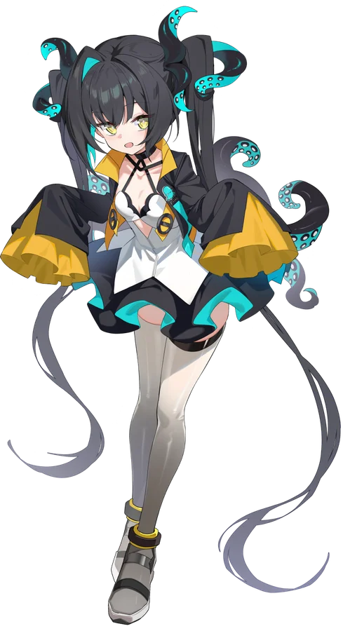
赛克斯 · 魔渊幼体
拉姆齐生物科技技术顾问，与璐璐一样，她也是拉姆齐生物科技的产物，代号“魔渊”。与璐璐不同的是，她本体为人造人，但意识在“退魔之夜”当晚觉醒，并与其他超自然生物有着千丝万缕的联系。本体拥有超强的再生能力和魔力亲和力。性格看似温顺，实则老谋深算，像一位深藏不露的老奶奶。她几乎没有攻击性，但并不代表她不会
选定4格内的一个地块，生成1个魔渊触须，并将该地块1格内的所有地块临时转化为魔渊区域。随后，激活魔渊区域内的所有魔渊触须。 魔渊区域：对以任何形式进入魔渊区域的敌方单位施加下次移动速度-2；此外，一轮一次，使移动进入魔渊区域的敌方角色停止移动。魔渊区域在赛克斯回合开始时消失。
PVE选定4格内的一个地块，生成1个魔渊触须，并将该地块2格内的所有地块临时转化为魔渊区域。随后，激活魔渊区域内的所有魔渊触须。 魔渊区域：对以任何形式进入魔渊区域的怪物施加下次移动速度-2。魔渊区域在赛克斯回合开始时消失。
游戏开始时，随机在地图上生成5个魔渊触须。回合结束时，赛克斯激活2格内所有的魔渊触须。 激活魔渊触须：魔渊触须对1格内的所有敌方单位造成1点伤害。 魔渊触须永久存在，一个地块最多存在一个魔渊触须。
PVE自身造成伤害时，对目标施加1层渊蚀印记（每层使自身受到来自魔渊触须和赛克斯的伤害），持续1轮。 回合结束时，在自身所在的地块生成1个魔渊触须。随后，激活3格内所有的魔渊触须。 激活魔渊触须：魔渊触须对2格内的所有怪物造成1点伤害，随后对其中受减速效果影响的怪物施加1层渊蚀印记（每层使自身受到来自魔渊触须和赛克斯的伤害），持续1轮。 魔渊触须永久存在，一个地块最多存在一个魔渊触须。
基础资料
PVE 特性
- 达到1星时防御力+1
- 初始星币+6
- 达到3星时攻击力+1、防御力+1、移动速度+1
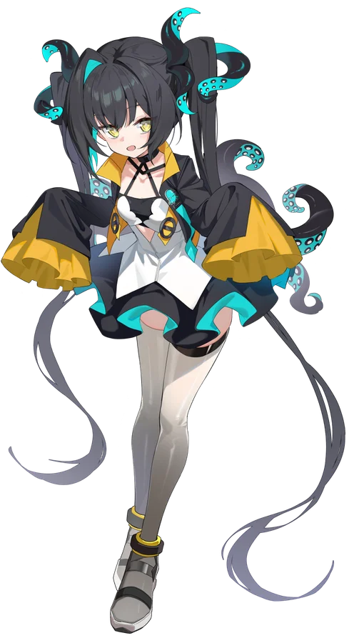
默认
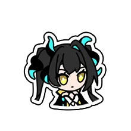
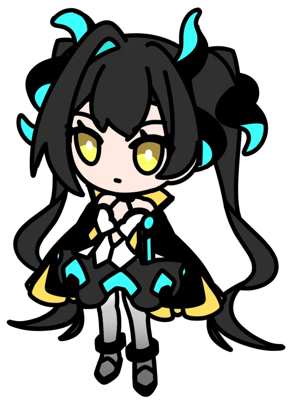
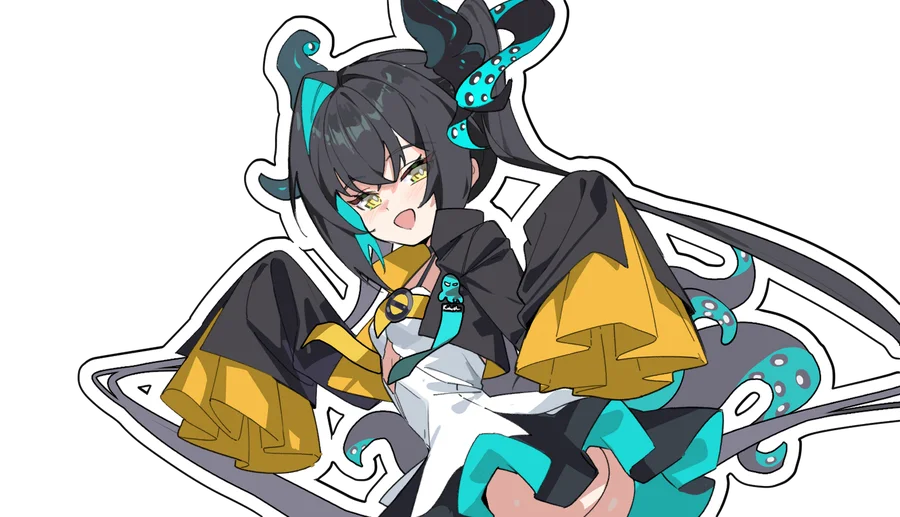
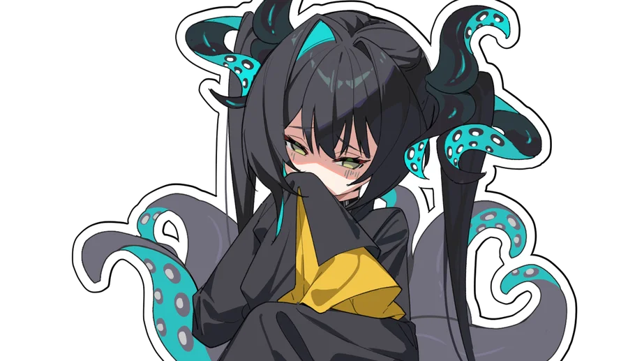
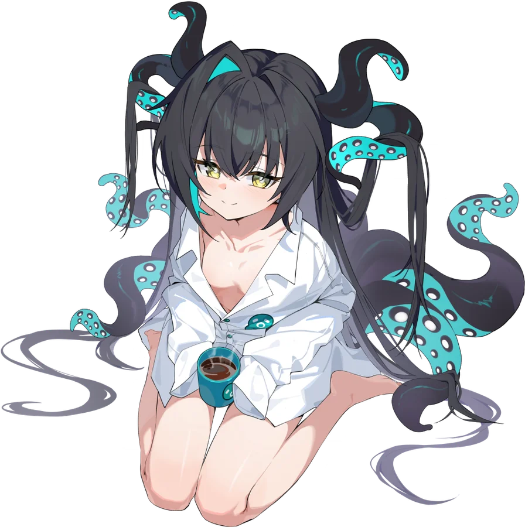
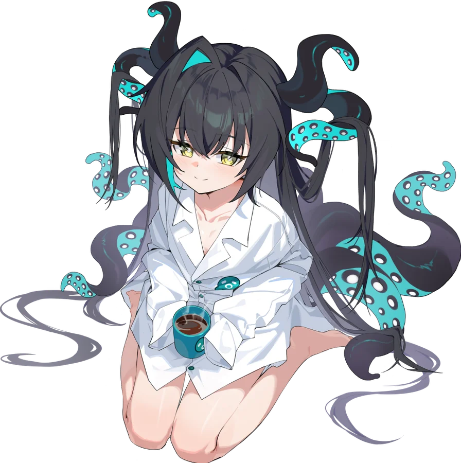
羁绊皮肤
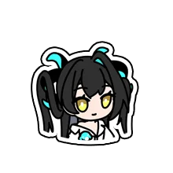
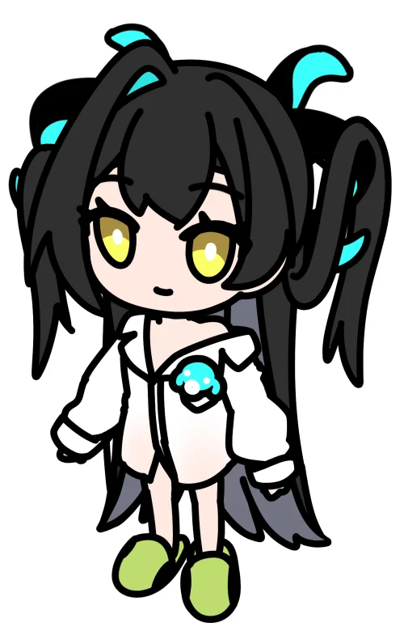
共 8 个表情，点击可放大。
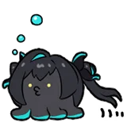
官方 wiki 没有这角色的 /获取 页，头像、名片、卡牌、骰子的完整清单暂缺；下方「档案」里保留了画廊中的零散素材。
人物传记
现任拉姆齐生物科技的技术顾问，其超强的再生能力也使其成为研究材料之一。
画廊其他素材

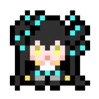
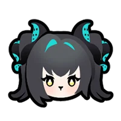
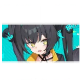
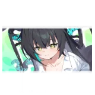
本地未收录该角色的语音台词。